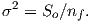
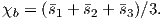
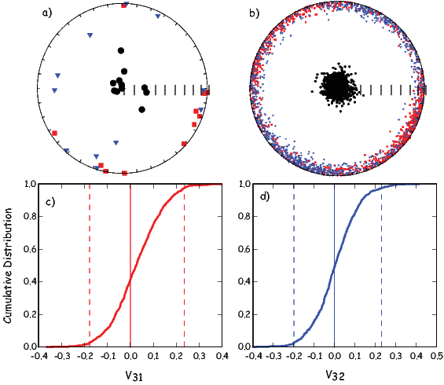
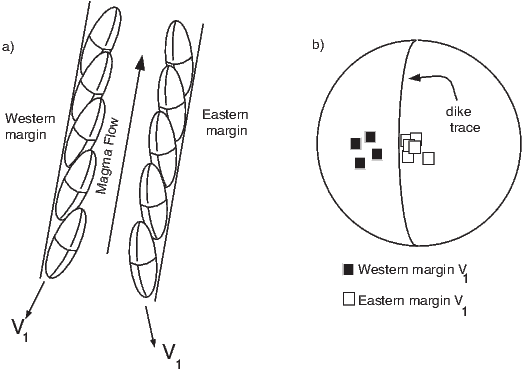
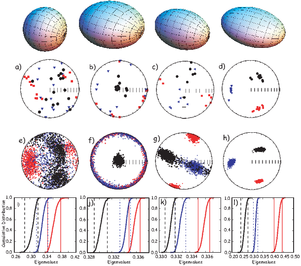
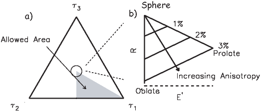

Figure 13.1: Definition of specimen coordinate system. b) Six measurement
scheme for determining the anisotropy ellipsoid. c) Position of the specimen
in the magnetic smagusceptibility meter.
BACKGROUND: read Means (1976), Part II; Tarling and Hrouda (1993); Collinson (1983), Chapter 2.
In the previous several chapters we have been concerned with magnetic vectors. Higher dimensional magnetic tensors characterizing the anisotropy of magnetic parameters like susceptibility or remanence are also tremendously useful in geological studies. Anisotropy data have applications in determining such varied parameters as paleocurrent directions, degree of paleosol maturity, directions of magma injection, tectonic strain, etc. They are also useful for correcting paleomagnetic vectors (including intensity) for bias owing to anisotropic remanence acquisition. The most frequently used magnetic tensors are the anisotropy of magnetic susceptibility (AMS) and the anisotropy of anhysteretic remanence (AARM) tensors, although TRM, DRM and IRM anisotropy are also measured from time to time. We will begin by building on the material introduced in Chapter 8 on how magnetic susceptibility is measured by describing how the AMS tensor is determined. Then we will extend the discussion to the anisotropy of remanences.
The relationship between a small applied magnetic field vector H and the induced magnetization vector M is the magnetic susceptibility (Chapter 1). This relationship has until this chapter been treated as a scalar property, independent of the directions of the field or magnetization vectors. While isotropy is frequently an adequate approximation, if the magnetic response of the specimen depends on the orientation of the applied field (i.e., it is anisotropic) the response is more appropriately approximated by a set of linear equations. Components of the induced magnetization(Mi) in a given coordinate system whose axes are denoted by X1,X2, and X3 (see Figure 13.1a) relate to the components of the applied field along the specimen axes Hi by the following linear equations:
|
| (13.1) |
where χij are coefficients of the magnetic susceptibility tensor.
We have met tensors before in the orientation matrix and rotation matrices (see Appendix A.3.5.) The coefficients χij are the elements of a second-order, symmetric tensor, known as the anisotropy of magnetic susceptibility (AMS) tensor χ. The set of Equations 13.1 can be rewritten in summation notation as:
|
| (13.2) |
The susceptibility tensor χ has 6 independent matrix elements because χij = χji. For convenience we define a column matrix s having six elements that are related to the elements of χ by:
 | (13.3) |
In practice, only s1,s2, and s3 can be measured directly, the terms s4 to s6 are only indirectly determined. In the simplest experiment, there are six measured values of susceptibility Ki made in six special positions. There are many measurement schemes possible; one is shown in Figure 13.1b. Measurement in position 1 gives K1 = s1. Similarly, in position 2, we measure K2 = s2, and in position 3, we get K3 = s3. But, K4 = 1 2 (s1 + s2) + s4, K5 = 1 2 (s2 + s3) + s5, and K6 = 1 2 (s1 + s3) + s6. From this we see that the elements of s are related to the matrix of measurements K in subscript notation by:
|
| (13.4) |
where A depends on the experimental design and is called the design matrix. The measurement scheme shown in Figure 13.1b, has the design matrix:
|
| (13.5) |
In order to calculate the best-fit values for the measurements, we can use linear algebra:
 | (13.6) |
where AT is the transpose of A and B = (AT A)-1AT . The elements of B for the scheme shown in Figure 13.1b are readily determined as:
 | (13.7) |
In the special case in which A is a square matrix (as in Equation 13.5), (AT A)-1AT reduces to A-1 (i.e. B = A-1).
There exists one coordinate system V (whose axes are the eigenvectors of χ: V1, V2, V3) in which the off-axis terms of χ are zero (see Appendix A.3.5). While the eigenvectors collectively are called the “principal axes”, the first eigenvector is also known simply as the principal eigenvector and the other two are the major and minor eigenvector respectively. In this special coordinate system:
|
| (13.8) |
The eigenvalues τ1, τ2 and τ3 correspond to the maximum, intermediate, and minimum susceptibility, respectively. These are the susceptibilities along the principal, major and minor eigenvectors V1, V2, and V3, respectively. Scaling χ by its trace yields values for τ that sum to unity. [Note that V1,V2 and V3 are sometimes referred to as Kmax,Kint, and Kmin, respectively in the literature. Also some practitioners prefer to normalize the eigenvalues such that their average is unity and not their sum.]

When the coordinate system of the susceptibility data is defined by the eigenvectors, then the components of magnetization Mi satisfy the following:
 | (13.9) |
The surface described by Equation 13.9 illustrated in Figure 13.2b traces an ellipsoid termed the magnitude ellipsoid by Nye (1957) whose semi-axes are directed along the Vi and whose lengths are proportional to the τi. We will refer to this ellipsoid in the following as the anisotropy of magnetic susceptibilty (AMS) ellipsoid. Because it is possible to have negative eigenvalues making the magnitude ellipsoid difficult to visualize, some workers prefer the representation quadric, which has a less direct relationship to the eigenvalues. In the case of negative eigenvalues (say for a carbonate dominated system), it is also possible to simply offset the eigenvalues by some DC offset to ensure positivity.
Many publications list AMS data in terms of the eigenvalues and eigenvectors, (the eigenparameters) so it is handy to have a way to transform eigenparameters back into matrix elements. This can be done using tricks from linear algebra:
|
| (13.10) |
where VT is the transpose of V. [Note that several (maybe even three) decimal places are required to do this inversion in a satisfactory fashion, yet almost no one reports to this degree of precision and the tensor elements you get back out may be very different from those that went in if there is insufficient precision.]
The eigenparameters of the susceptibility tensor are related to the statistical alignment of dia-, para-, and/or ferromagnetic phases within the rock and the AMS ellipsoid can be used to describe the magnetic fabric of the rock. The eigenvectors describe the orientation of the ellipsoid while the eigenvalues describe the shape. Much of the interpretation of AMS data in the literature revolves around an assessment of directions of principal axes and relative magnitudes of the eigenvalues.
There is a bewildering variety of conventions for describing the relationships among the three eigenvalues (see, Table 13.1 for a partial list). A practical initial classification scheme can be made with the following rules: when (τ1 ≃ τ2 ≃ τ3), the shape of the ellipsoid is a sphere; when (τ1 ≃ τ2 > τ3), it is oblate. The shape is prolate when (τ1 > τ2 ≃ τ3), and, finally, the anisotropy ellipsoid is triaxial when (τ1 > τ2 > τ3). Because there are nearly always three distinct values of τ, it is a statistical problem to decide whether the eigenvalues from a given data set are significantly different from one another.
Making only six measurements allows calculation of the eigenparameters, but gives no constraints for their uncertainties. We would like to ask questions such as the following:
1) Is a particular axis parallel to some direction? Is V3 vertical as might be expected for a primary sedimentary fabric? Is V1 parallel to some lineation such as elongated vesicles in volcanic dikes, or deformed ooids in strained rocks?
2) Are two sets of eigenvectors distinct? Are data from two sides of a dike margin imbricated, allowing interpretation of flow direction? Has progressive strain rotated the rock fabrics?
3) What is the shape of the AMS ellipsoid? Are the eigenvalues distinct? Is the fabric oblate, as for consolidated, undeformed sedimentary rocks? Does the shape change as a result of progressive deformation in metamorphic rocks?
In order to address questions such as these, we need some sort of confidence intervals for the eigenparameters; hence we need to make more than six measurements and we need a means of translating the measurements into uncertainties in AMS data. The principles of error analysis for anisotropy measurements were originally laid out by Hext (1963), and were later fleshed out by Jelinek (1978). These are analytical approaches. Constable and Tauxe (1990) took an entirely different approach using a bootstrap. We will begin with the Hext (1963) method which serves as the foundation for all modern AMS statistical analysis.
Each measurement Ki has an unknown measurement uncertainty δ so we can write:
|
| (13.11) |
Hext (1963) defined the residual sum of squares So to be:
 | (13.12) |
and the estimated variance σ2 as:
 | (13.13) |
nf is the number of degrees of freedom, given by Nmeas - 6 where Nmeas is the number of measurements and six is the minimum number of measurements required to determine the susceptibility tensor.

There are many measurement schemes in common usage with as few as six (for which σ2 is undefined) and as many as several hundred. The scheme of Jelinek (1976), has Nmeas = 15, and is described in detail in Appendix D.1. Spinning susceptibility meters have more recently been introduced that measure magnetic susceptibility as the specimen spins around each of three axes (see Figure D.3). The procedure used in the SIO lab (see e.g., Gee et al., 2008 for details) is also briefly described in Appendix D.2.
Each measurement system has an associated design matrix from which the B matrix of Equation 13.6 can be determined. Once the B matrix is set up, we can calculate the best-fit values for s:
|
| (13.14) |
The best-fit values for K () can then be calculated by substituting the right A matrix (see e.g., Appendix D.1):
|
| (13.15) |
and So is given by Equation 13.12.
Assuming that the uncertainties in K (the δi) have zero mean, and that they are uncorrelated, normally distributed, and small (so that the products of uncertainties can be neglected), Hext (1963) proposed that approximate 95% confidence ellipses for the eigenvectors (see Figure 13.3) can be calculated as described as follows:
The Hext (1963) confidence ellipses shown in Figure 13.3 are calculated as follows:
The three unique semi-angles of the confidence ellipses ϵij are calculated by:
![ϵ12 = tan -1[fσ∕2(τ1 - τ2)]
ϵ = tan -1[fσ∕2(τ - τ)]
23 -1 2 3
ϵ13 = tan [fσ∕2(τ1 - τ3)]
ϵ21 = ϵ12
ϵ32 = ϵ23
ϵ31 = ϵ13,](WebBook3351x.png) | (13.16) |
where

and where F(2,nf) is the value from the F table (see F-tables in a statistics book or online), with 2 and nf degrees of freedom, at the p probability level. The value of F(2,nf) for Nmeas = 15 measurements (nf = 9) at the 95% level of confidence (p = .05) is 4.26 and so f = 2.92.
Because of the mindless precision of modern computers, there are always three different eigenvalues returned by subroutines for eigenparameter calculation. But, these may not be significantly different from one another. In order to test for significance, Hext (1963) developed three F statistics: F for significance of overall anisotropy, F12 for significant difference between the maximum and intermediate eigenvalues (are the data oblate?) and F23 for significant difference between the intermediate and minimum eigenvalues (are the data prolate?). (If all three are positive, the data are triaxial). The F statistics are calculated as follows:
|
| (13.17) |
where the bulk susceptibility χb is given by:
 | (13.18) |
The critical value for F (when Nmeas = 15) is 3.4817 for 95% confidence (for F12 and F23, it is 4.2565). So, we can test if the data are isotropic (F) (τ1 = τ2 = τ3), if τ1 = τ2 (F12), or if τ2 = τ3 (F23). F values below the critical values do not allow rejection of the null hypotheses of isotropy or rotational symmetry, respectively.
The assumptions for using Hext statistics (Section 13.2) are that the uncertainties in the measurements have zero mean, are normally distributed, and are small. While measurement error using modern equipment is likely to be quite small, data from a collection of specimens often do not conform to these restrictive assumptions. In particular, the δ values are often large.
Constable and Tauxe (1990) showed that, in general, δs from AMS data calculated for multiple specimens (that must be normalized by their trace) will not be normally distributed. Hence, data incorporating multiple specimens are often not amenable to Hext statistics. For this reason, Constable and Tauxe (1990) developed a bootstrap for paleomagnetic tensors. Their bootstrap was developed for AMS data but anisotropy of remanence data could be treated in a similar manner.

To motivate the discussion of statistical analysis of AMS data, we will use a data set collected from the margins of dikes from the ophiolite sequence exposed on the Island of Cyprus (data from Tauxe et al. 1998). The eigenvectors in Figure 13.4a are those estimated for individually oriented samples from one of the quenched margins of a dike. They are plotted on an equal area projection following the convention of lower hemisphere projections with the V1s as squares, V2s as triangles, and V3s as circles. Open symbols are the mean values. The data are rather typical for those obtained from a single homogeneous body of rock in that the δ distributions are neither normally distributed, nor small.
The Hext 95% confidence ellipses are shown as thin blue lines (dashed on the upper hemisphere. The confidence ellipses for the maxima (squares) and intermediate (triangles) eigenvectors follow the trends in the data, but that for the minima (circles) does not. In fact the ellipse for the minimum axis appears to be orthogonal to the trend in the data. It also seems that the confidence ellipses are quite large and at least for the maximum eigenvector, too wide. The problem with Hext statistics is that it is only suitable for data sets with small δi that are normally distributed.
In order to deal with data that do not fit the requirements for Hext statistics, Constable and Tauxe (1990) developed a bootstrap for anisotropy data, similar to that introduced in Chapter 12 for vectors. We take a number of randomly selected pseudo-samples and calculate the Hext average matrices and their eigenparameters. The bootstrapped eigenvectors are shown in Figure 13.4(b-d).
A non-parametric confidence region for the bootstrapped distributions shown in Figure 13.4b-d could be drawn as a contour line enclosing 95% of the bootstrapped eigenvectors. Because it is often useful to characterize the average uncertainties with a few parameters (for example, to put them in a data table), we can proceed as with the unit vectors and assume some sort of distribution for the eigenvectors, for example, the Kent distribution from Chapter 12). However, for most of the questions outlined at the beginning of the chapter, it is preferable to assess directly the 95% confidence bounds on the parameter of interest.
By analogy with the bootstrap for unit vectors and the fold test, we can also perform parametric bootstraps. There are two flavors of these: the specimen parametric bootstrap and the site parametric bootstrap. For the specimen parametric bootstrap, proceed as follows: After randomly selecting a particular specimen for inclusion, each element si is replaced by a simulated element drawn from a normal distribution having a mean of si and σ as calculated for the specimen. This Monte Carlo type simulation assumes that the measurement uncertainties are normally distributed, which is likely to be the case. If instrument noise is significant, then the specimen parametric bootstrap can be an important tool.
Because the δi data from homogeneous rock bodies are often normally distributed (although not necessarily small), we can also perform a parametric bootstrap at the level of the site (the site parametric bootstrap). This is done by drawing pseudo-samples as before, but replacing individual elements of si with simulated data drawn from normal distributions with mean of si, but using the standard deviation calculated from the data for an entire site. This procedure goes a long way toward estimating realistic confidence intervals from sites with too few specimens.
Speaking of “too few samples”, it is important to emphasize again that bootstrapped confidence ellipses are only asymptotically correct, relying on the assumption that the full statistical variability is represented in the data set. It is inadvisable to rely on bootstrapped uncertainties with fewer than about 20 specimens as they will be too small. If it is possible to perform a parametric bootstrap (i.e., the δs are normally distributed), then perhaps as few as six specimens can be done (see Tauxe et al. 1998 for a more complete discussion).

We can now consider whether a particular axis is distinct from a given direction or another eigenvector. For example, we may wish to know if a given data set from a series of sediments has a vertical minor eigenvector as would be expected for a primary sedimentary fabric. In Figure 13.5a we show AMS data from samples taken from the Scaglia Bianca Formation (Cretaceous white limestones) in the Umbrian Alps of Italy. They have been rotated into tilt adjusted coordinates; hence the bedding pole is vertical. Instead of plotting the 95% confidence ellipses, which all require unnecessary parametric assumptions, we show the bootstrap eigenvectors in Figure 13.5b. The smear of points certainly covers the vertical direction, consistent with a vertical direction for V3. To make the test at a given level of confidence (say 95%), we can employ the method developed for unit vectors in which the set of bootstrapped vectors for the eigenvector of choice (here V3) are converted to cartesian coordinates, sorted and plotted as a cumulative distribution (see Figure 13.5c and d). Now the bootstrapped 95% confidence bounds can be directly compared with the expected value. For a direction to be vertical, both the x1 and x2 components must be indistinguishable from zero (see solid line in the figure). Because zero is included within the confidence intervals in Figures 13.5c and d respectively, the data shown in Figure 13.5a have a minor eigenvector axis that cannot be distinguished from vertical at the 95% level of confidence.
Another question that often arises is whether eigenvectors from two sets of anisotropy data can be distinguished from one another. For example, are the V1 directions from data sets collected from two margins of a dike different from one another and on opposite sides of the dike plane as expected from anisotropy controlled by silicate imbrication.

The principles by which flow directions can be determined in volcanic dikes were laid out by Knight and Walker (1988). While the magma is flowing in the dike, elongate particles become imbricated against the chilled margins (see Figure 13.6). Opaque phases such as magnetite are often observed to be distributed along the fabric of the silicate phases (see Hargraves, 1991). The principal eigenvectors arising from such a distribution anisotropy parallel the fabric of the silicates. In Figure 13.6b, we show that in the ideal case, the V1 directions from the two margins are distinct and fall on either side of the dike trace. Because the convention is to plot AMS data in lower hemisphere projections, the fact that the western margin data plot on the western side, and the eastern margin data plot on the eastern side suggests that the flow was upward. Thus, the AMS data from chilled margins of dikes can give not only a lineation, but a well constrained direction of magma flow.
Some of the earliest magnetic measurements made on sediments were of anisotropy of magnetic susceptibility (see summary by Tarling and Hrouda, 1993). In general, these data show that the magnetic fabric of sediments is strongly affected by the depositional environment (see Figure 13.7). For example, quiet water deposition ( Figure 13.7a) should have V3 directions that are perpendicular to the bedding plane, with an oblate AMS ellipsoid. In moderate currents (no particle entrainment) (see Figure 13.7b), particles should be imbricated, resulting in (slightly) off-vertical V3 directions. The V1 direction (in lower hemisphere projections) is antiparallel to the paleo-flow direction, and the fabric is characterized by an oblate AMS ellipsoid. But when deposition occurs under high current flow (with particles entrained) (Figure 13.7c), the V3 distribution should be streaked. V1 should be perpendicular to the flow direction, and the fabric is characterized by prolate or triaxial AMS ellipsoids. Each of these categories relies on some assessment of shape but the data may not be suitable for Hext statistics. We therefore require some non-parametric (bootstrap) way of characterizing the basic shapes in anisotropy ellipsoids.


While there are innumerable ways of characterizing shapes of anisotropy ellipsoids in the literature, all discussions of “shape” revolve around the relationships between the various eigenvalues. The first question to consider is whether these can be distinguished in a statistical sense. The F parameters in Hext (1963) statistics allow us to check for significance of the difference between the eigenvalues. However, the approximations involved in the Hext method make it inappropriate for many data sets involving more than one sample. Bootstrapping has less restrictive assumptions that allow statistical tests to be applied more widely.
Here we outline a bootstrap test for comparing two eigenvalues that is quite similar to the bootstrap test for common mean described in Chapter 12. In Figure 13.8a-d, we show the eigenvectors from four typical data sets. Bootstrapped eigenvectors from these data sets are shown in Figure 13.8e-h. In the next panel (Figures 13.8i-l) , we plot cumulative distributions of the eigenvalues along with their 95% confidence bounds. These provide a means for quantifying the shape tests defined earlier. For example, in Figure 13.8a, the data represent an essentially spherical shape. The three eigenvalues plotted in the cumulative distribution diagram (Figure 13.8i) have overlapping confidence intervals, hence they are indistinguishable. The corresponding bootstrapped eigenvectors shown in Figure 13.8e plot in a cloud with very blurred boundaries between the minor and other eigenvector directions.
In Figure 13.8b we show data characteristic of an oblate ellipsoid. The V3 eigenvector is reasonably well defined, but the distribution of bootstrapped V2 and V1 form a girdle distribution (Figure 13.8f). The defining characteristic for oblate ellipoids is that the smallest eigenvalue is distinct from the intermediate one, while the intermediate eigenvalue is indistinguishable from the largest and this is clearly the case (see Figure 13.8j).
Data from a prolate ellipsoid are plotted in Figure 13.8c. The V1 directions are nicely defined, but the V2 and V3 directions are smeared in a girdle (Figure 13.8g). The bootstrapped eigenvalue distributions show that the τ1 distribution is separate from the other two, but τ2 and τ3 are clumped together (Figure 13.8k).
Finally, data from the triaxial case are shown in Figure 13.8d. The corresponding eigenvectors well grouped (Figure 13.8h) and all three eigenvalues are distinct (Figure 13.8l).
There is no “right” way to plot eigenvalue data. Each application requires careful thought as to what is actually being tested. What do you want to know? The cumulative distribution method illustrated in Figure 13.8 is most appropriate for classifying shape characteristics of a relatively homogeneous set of samples. However, it may not be ideal for examining trends in behavior among samples or data sets. For example, one may wish to show the progressive change in shape and degree of anisotropy as a function of metamorphism. In such a case, plots that boil the shape down to a single parameter may serve better. Or one may wish to examine temporal trends in shape, for example the progressive change in sedimentary fabric with depth. In this case, plots of eigenvalues versus stratigraphic position may be the most useful way of looking at the data. In any case there are a plethora of anisotropy parameters in the literature. We list some of the more popular so-called “shape parameters” in Table 13.1.
Many researchers use the total anisotropy parameter of Owens (1974). This has the uncomfortable property of ranging up to 300%; hence, we prefer the parameter called here the % anisotropy of Tauxe et al. (1990) as this ranges from 0 - 100%. The so-called “corrected anisotropy” of Jelinek (1981) has several definitions in the literature (compare for example Borradaile (1988) with Jelinek (1981); we have used the original definition of Jelinek (1981).
With the variety of shape parameters comes a host of plotting conventions. We will consider four types of plots here: the Flinn diagram (F versus L) after Flinn (1962), the Ramsay diagram (F′ versus L′) after Ramsay (1967), the Jelinek diagram (P′ versus T) after Jelinek (1981), and the ternary projection (see Woodcock, 1977 and Tauxe et al., 1990). The Flinn, Ramsay, and Jelinek diagrams are shown in Figure 13.9 and the ternary projection is shown in Figure 13.10.

The Flinn and Ramsay diagrams are very similar, but the Ramsay plot has the property of having a zero minimum as opposed to starting at 1.0 as in the Flinn diagram. Both are essentially polar plots, with radial trajectories indicating increasing anisotropy. Shape is reflected in the angle, with “oblate” shapes below the line and “prolate” shapes above.
It is important to remember that, in fact, only points along the plot axes themselves are truly oblate or prolate and that all the area of the plot is in the “triaxial” region. Because of statistical uncertainties, samples that plot in this region may fail the F12 or F23 tests of Hext and be classifiable as “oblate” or “prolate”. In general, however, only a narrow zone near the axes can be considered oblate or prolate, so these terms are often used loosely.
In the Jelinek diagram “corrected” anisotropy increases along the horizontal axis and shape is reflected in the vertical axis. There is no real advantage to using the highly derived P′ and T parameters over the Ramsay or Flinn plots. Nonetheless they are quite popular (Tarling and Hrouda, 1993).
In the ternary projection, there are actually three axes (see Figure 13.10a). The projection can be plotted as a normal X-Y plot by using the E′ and R parameters listed in Table 1 (see Figure 13.10b).
In none of the various types of plots just discussed are the horizontal and vertical axes independent of one another, but all the diagrams reflect the essence of the ellipsoid shape. Unlike the cumulative distribution plots shown in Figure 13.8 with bootstrap confidence intervals, it is not possible to determine whether the various eigenvalues or ratios thereof can be distinguished from one another in a statistical sense.

| Parameter (Reference) | Equation |
| Bulk Susceptibility (see text) | χb = (s1 + s2 + s3)∕3 |
| Normalized eigenvalues (see text) | τ1 + τ2 + τ3 = 1 |
| Log eigenvalues (Jelinek, 1981) | η1 = lns1;η2 = lns2;η3 = lns3 |
| Log mean susceptibility (Jelinek, 1981) | = (η1 + η2 + η3)∕3 |
| Magnitude of Anisotropy: | |
| % Anisotropy (Tauxe et al. , 1990) | %h = 100(τ1 - τ3) |
| “Total” Anisotropy (Owens, 1974) | A = (s1 - s3)∕χb |
| Anisotropy Degree (Nagata, 1961) | P = τ1∕τ3 |
| “Corrected” Anisotropy (Jelinek, 1981) | P′ = e] |
| Shape: | |
| Shape Factor (Jelinek, 1981]) | T = (2η2 - η1 - η3)∕(η1 - η3) |
| Lineation (Balsley and Buddington, 1960) | L = τ1∕τ2 |
| Foliation (Stacey et al., 1960) | F = τ2∕τ3 |
| log Lineation (Woodcock, 1977) | L′ = ln(L) |
| log Foliation (Woodcock, 1977) | F′ = ln(F) |
| Elongation (Tauxe, 1998) | E′ = τ1 + .5τ3 |
| Roundness (Tauxe, 1998) | R = sin(60)τ3 |
Magnetic susceptibility is somewhat like color in that many things contribute and it is often difficult to untangle all the different contributions to tease out a meaningful interpretation. Magnetic remanence is a much more targeted parameter because only ferromagnetic particles contribute to it and certain remanences are sensitive to only particular minerals or grain sizes. Hence anisotropy of magnetic remanence can be a more delicate instrument than AMS. Furthermore, certain applications such as paleointensity, paleodirectional determinations or correction of inclination error may require the anisotropy of the TRM or DRM to be taken into account. For example, paleointensity on pot sherds or other anisotropic specimens must be corrected for specimen’s anisotropy (e.g., Aitken et al. 1981) and the inclination “error” of DRM (see Chapter 7) can be corrected using information from ARM anisotropy (e.g., Jackson et al. 1991).
ARM is often considered analogous to TRM. Its acquisition is mathematically similar, but relies instead on variations in applied field as opposed to temperature as a blocking mechanism (see Chapter 7). It is far more convenient to give a sample an ARM than a TRM in the laboratory, so ARM and ARM anisotropy are frequently substituted for the analogous TRM. Of course, the two are NOT identical and proper care should be taken to ensure that the appropriate remanence is used for the particular purpose. Nonetheless, anisotropy of ARM (AARM) is a useful measurement and we describe first how AARM is determined in the SIO laboratory. There are slight experimental differences between AARM and ATRM which will be noted.
Prior to acquisition of the laboratory remanence, the specimen should be in a fully demagnetized state which is measured as a baseline. Then one applies an ARM in at least three directions (say positions 1, 2 and 3 in Figure 13.1b). Generally, from six to 15 orientations for the ARM are used to get a reasonable estimate of the uncertainties. [We use the nine positions 1-3, 6-8, and 11-13 in the SIO laboratory.] Between each position, the specimen should be demagnetized along the axis of the subsequent ARM. This measurement is substracted from the subsequent ARM by vector subtraction. Each ARM step (after subtraction of the baseline) gives three orthogonal remanence components (KijR). Please note that it is possible to give ARMs in the presence of different AF fields from very high (presumably a total ARM) to lower (giving a partial ARM or pARM). The DC field is also variable, but should be in the region where the (p)ARM is linearly related to the DC field.
The main difference between AARM and ATRM in procedure is that the demagnetization step is not required for total TRMs. Instead, the specimen is simply placed in each direction without the intervening baseline step.
The equation for anisotropy of magnetic remanence that is analogous to Equation 13.1 is Mi = χijRHj where χR are the coefficients for the remanent anisotropy. These can be reduced to the elements of s by multiplying by the appropriate B matrix, depending on the number and orientation of positions used in the experiment. Because each measurement yields information along three axes, the design matrix has three times as many elements as for the AMS experiment with the same number of measurements. For example, for a six position experiment, the design matrix is 18 x 6 instead of 6x6. After determining s, the other Hext parameters can be determined as before, using nf = 3Nmeas - 6.
To correct an observed remanence vector (Mobs) obtained through the measurement procedures outlined in Chapters 9 and 10 (direction and intensity) for the effects of anisotropy, Selkin et al. (2000b) used the TRM anisotropy tensor (or ARM tensor) χR as follows.
The ancient field direction H is given by:

To get an anisotropy corrected intensity (|MAC|), however, we must multiply the magnitude of the observed vector M by the ratio of the magnetization acquired in a unit field applied along the lab field direction (Ml = χR ⋅ Hlab) with that acquired in a unit field applied along the ancient field direction (Ma = χR ⋅ Hanc):

Inclination of DRM is often too shallow (see Chapter 7) and laboratory experiments show that it follows a tangent function:
 | (13.19) |
where Io and If are the observed DRM inclination and the applied field inclination respectively (e.g., King, 1955). The parameter f is the “flattening factor”.
Jackson et al. (1991) restate the relationship of the DRM (Md) to the applied field H as:

where kd is the DRM tensor. The eigenvalues of the kd matrix are here referred to as κdi where κd1 is here taken as the largest for consistency with the rest of this book. Jackson et al. (1991) demonstrated that the flattening factor f is equivalent to the ratio κd3∕κd1. Therefore the trick to correcting flattened inclinations is to estimate kd.
There could be several ways of estimating the DRM tensor in the lab: directly, by redeposition or indirectly, by measuring the anisotropy of a proxy remanence (say ARM). Redeposition is in practice quite problematic because it is rarely possible to recreate the original depositional conditions of grain size, water chemistry, particle flux, turbulence and so on that might play a role in determining the anisotropy tensor, particularly as a function of applied magnetic field. The proxy approach is straight-forward in the lab, but difficult to tie directly to the DRM anisotropy. What is required is a laboratory remanence that closely targets the same spectrum of coercivities as that carrying the DRM. By AF demagnetizing the NRM and an ARM or a pARM it can be shown that the (p)ARM often satisfies this requirement (see e.g., Levi and Banerjee 1976). From this, Jackson et al. (1991) argue that the ARM tensor is the best proxy remanence for the DRM. However, we note that this is only likely to be true for DRMs carried by magnetite and will not be true for hematite remanences, which are notoriously resistent to acquisition of ARM or demagnetization by AF.
Despite the fact that ARM and DRM may be carried by the same particles, the relationship between the ARM and DRM anisotropy tensors is not straightforward. Jackson et al. (1991) consider the complexity of the processes that align and misalign particle long-axes, including the external magnetic field, gravitational, compactional, electrostatic, surface tension and Van der Waal’s forces. The result of all of these is only a slight net alignment (as discussed in Chapter 7). Under certain circumstances including post-depositional compaction and syn-depositional effect of elongate particles landing on the sediment/water interface, there can be preferential alignment in the horizontal plane leading to inclination shallowing.
In order to tie the AARM tensor to the DRM anisotropy tensor, we need to determine the orientations of the particle long axes as well as the effects of individual particle anisotropies. This latter results from the fact that individual particles are not ordinarily at saturation being generally (except for very small grains or grains of low magnetization materials) non-uniformly magnetized themselves (e.g., vortex remanence state). The rationale is that because AARM reflects the variations in the capacity for carrying remanence in the detrital particles, that AARM can be used to determine the anisotropy of DRM, if the ARM anisotropy of the detrital particles themselves can be determined. The details of how this are done in practice is summarized in the Appendix.
SUPPLEMENTAL READINGS: Vaughn et al. (2005); Paquereau-Lebti et al. (2008).
Make sure you have downloaded and unzipped the Datafiles for this book (see Chapter 5 for instructions.) The data for these problems are in the Chapter_13 directory.
Problem 1
Someone measured the AMS of a set of specimens using the six position measurement scheme described in the chapter. These data were converted to the six tensor elements si as in Equation 13.3. The six tensor elements for each specimen are saved in file prob13-1.dat.
a) Convert these to eigenvalues and eigenvectors using program s_eigs.py (see example in PmagPy). Remember also that all PmagPy programs have a help menu by typing the program name with -h after it on the command line.)
b) Now convert the eigenparameters back to the si using eigs_s.py). Compare the two si files. Are they identical? How many times can you repeat this before the data are completely unreliable?
c) Convert the file prob13-1.dat into the MagIC format using s_magic.py program and make a plot of the data using aniso_magic.py. Write a figure caption for each plot you see (there should be three!). Try different ellipse calculation methods. Which method gives the best idea of the actual uncertainties in the data?
Problem 2
Someone went to an ophiolite and sampled the eastern and western margins of a dike. They also measured the dip direction and dip of the dike in several places (saved in the file dike.dd). Specimens from the samples were measured using the 15 measurement scheme described in Appendix D.1 and saved as the east.k15 and west.k15 data files. The format for these files is:
specimen_name [optional: az,pl,strike,dip]
| K1 | K2 | K3 | K4 | K5 | |
| K6 | K7 | K8 | K9 | K10 | |
| K11 | K12 | K13 | K14 | K15 | |
where az, pl, strike, dip are the azimuth and plunge of the laboratory arrow and the structural strike and dip (see Chapter 9) and the Ki are the susceptibility measurements.
a) Calculate the average bedding pole direction from the strike and dip measurements. [Hint: convert each dip direction and dip to its pole by: pole declination = dip direction; pole inclination = 90 - dip. Calculate the average pole with gofish.py (see example in PmagPy or review Chapter 11 problems).]
b) Import the .k15 formatted files into the MagIC format using the QuickMagIC.py GUI as follows: Create an empty folder that has no spaces in the Path. Type QuickMagIC.py on your command line and select your new folder as the Project Directory. Under the Import menu, select ‘anisotropy files’ and choose the ‘k15’ format. Import each data file. There is a single character that differentiates between specimen and sample. Samples are distinguished from sites with a ’-’ delimiter. For the location, just put ’Dike’. After importing the files, Click on ‘1. convert magnetometer files’ and choose ‘Next Step’. Combine combine all the files into a single magic_measurements.txt file by clicking on ‘OK’. In Step 3, just click on ‘OK’ to create a single er_samples.txt file. When you are finished, exit from QuickMagIC and find your command line. Make sure you are in your Project Directory.
c) Plot the AMS data by typing “aniso_magic.py” on the command line in your Project Directory. First you must combine the data from the two different margins into a single file using the program combine_magic.py. To do this type the following on your command line:
Now you can plot the data “by site” which in this case is by margin. Choose the geographic coordinate system and suppress the bootstrap. Plot the Hext ellipses. Then choose a parametric bootstrap, plotting the bootstrap eigenvectors. If you are doing this from within your notebook, use the -sav option to prevent hanging of the program. How do the two methods compare?
d) Plot the dike plane by choosing to plot the great circle (check the help message to see how to do that) and enter the pole you calculated in a).
e) Which direction was the magma flowing when the dike was created?
Problem 3
For this problem, we will download data from the MagIC database that were published by Schwehr and Tauxe (2003) as part of a study to detect slumping in sedimentary environments.
a) Download the dataset from the persistent link to this study at by clicking on the ‘Data’ icon:
http://earthref.org/MAGIC/1984/
Put the file you downloaded into a new Project Directory.
b) After firing up the QuickMagIC.py graphical user interface, click on ‘unpack downloaded txt file’ from the front panel and choose the file you downloaded in a).
c) Plot the data with the aniso_magic.py (from the command line or using the -sav option from within the Python notebook). and choose the “plot by site, parametric bootstrap and bootstrapped eigenvectors” options. There were three sites collected: one from undisturbed sedimentary layers, one with clear evidence of slumping in the outcrop and one from the same horizon, but with no obvious slumping at the sampling site (a cryptoslump). Which site was which?